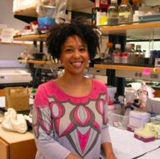
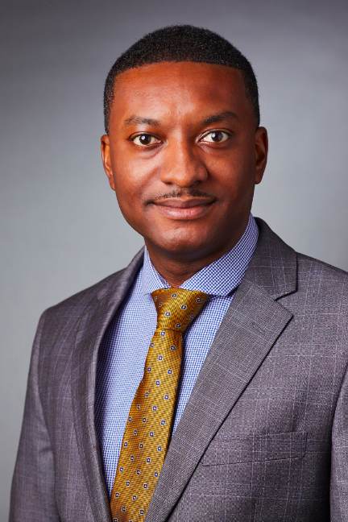
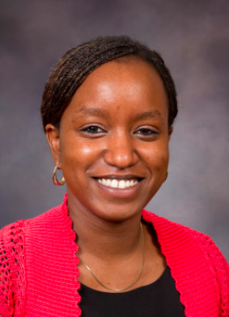
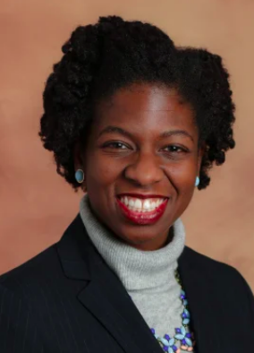

Below is a list of black faculty members at Yale who can serve as points of contact for interests and concerns in black medical research, black medicine, and overall black healthcare.
Anjelica Gonzalez, Biomedical Engineering
Anjelica has a dedicated interest in training the next generation of scientists to think interdisciplinary and approach problems form a scientifically global perspective. With a multi-disciplinary approach, the Gonzalez lab combines organic chemistry, molecular biology, mathematics, computational modeling and image analysis to develop and use biomedically engineering scaffolds to dissect the chemo-mechanics of immunological processes. This work has special significance to an array of diseases and disorders, including atherosclerosis, arthritis, diabetes, cutaneous T-cell lymphoma, and sepsis.
Email Professor GonzalezMarcella Nunez-Smith, Chronic Disease Epidemiology/General Internal Medicine
Dr. Nunez-Smith is Associate Professor of Internal Medicine, Public Health, and Management; Founding Director of the Equity Research and Innovation Center (ERIC); Director of the Center for Research Engagement (CRE); Deputy Director of the Yale Center for Clinical Investigation; Core Faculty in the National Clinician Scholars Program; Research Faculty in the Global Health Leadership Initiative; Director of the Pozen-Commonwealth Fund Fellowship in Health Equity Leadership; and Co-Director of the Doris Duke Clinical Research Fellowship. Dr. Nunez-Smith’s research focuses on promoting health and healthcare equity for structurally marginalized populations with an emphasis on supporting healthcare workforce diversity and development, developing patient reported measurements of healthcare quality, and identifying regional strategies to reduce the global burden of non-communicable diseases. She is the principal investigator on several NIH and foundation-funded research projects, including an NIH-funded project to develop a tool to assess patient reported experiences of discrimination in healthcare. She has conducted an investigation of the promotion and retention of diversity in academic medical school faculty and has published numerous articles on the experiences of minority students and faculty. Funded by NIH/NIMHD, she established the Eastern Caribbean Health Outcomes Research Network (ECHORN), a research collaborative across four Eastern Caribbean islands, supporting several chronic disease research projects and enhancing health outcomes research and leadership capacity in the region. She recently received NIH/NHLBI funding to build upon this work by recruiting children into an expanded intergenerational ECHORN cohort, inclusive of a biorepository. She is also PI on one of five NIH/NIMHD-funded Transdisciplinary Collaborative Centers on Health Disparities focused on Precision Medicine which leverages the ECHORN infrastructure to conduct collaborative research on hypertension and diabetes. Dr. Nunez-Smith is board certified in internal medicine, having completed residency training at Harvard University’s Brigham and Women’s Hospital and fellowship at the Yale Robert Wood Johnson Foundation Clinical Scholars Program, where she also received a Masters in Health Sciences.
Email Dr. Nunez-SmithYetsa Tuakli-Wosornu, Chronic Disease Epidemiology
Yetsa A. Tuakli-Wosornu, MD, MPH is an Associate Research Scientist in the Department of Chronic Disease Epidemiology, at the Yale School of Public Health. A board-certified Physiatrist, Dr. Tuakli often draws upon her personal experiences as an athlete when she works with patients: she is a long jumper who represented the Ghana National Team until 2016. Dr. Tuakli serves as chair of the International Society of Physical and Rehabilitation Medicine (ISPRM) Task Force on Physical Activity for Persons with Disabilities, member of the International Blind Sports Federation (IBSA) medical committee, member of the U.S. Center for SafeSport Athletes with Disabilities advisory group, and she represents the International Paralympic Committee (IPC) on the International Olympic Committee (IOC) Prevention of Harassment and Abuse working group. Dr. Tuakli is the founder and director of the Sports Equity Lab in association with Yale (SELY).
Email Dr. Tuakli-WosornuSakinah Carter Suttiratana, Chronic Disease Epidemiology
Dr. Suttiratana's Profile Email Dr. SuttiratanaYusuf Ransome, Social and Behavorial Health
Dr. Yusuf Ransome is an assistant professor of public health, specializing in social and behavioral sciences. His research focuses the social influences on disparities in HIV/AIDS, substance abuse issues, and homelessness among younger populations. The National Institute of Mental Health gave him a K01 Mentored Research Scientist Development Award to study the direct impact of various socioeconomic factors on HIV care in the United States healthcare system.
Email Dr. RansomeChristine Ngaruiya, Emergency Medicine
Dr. Christine Ngaruiya is an Assistant Professor in the Department of Emergency Medicine (DEM) at Yale University. She completed the Global Health and International Emergency Medicine fellowship in the DEM in 2015, also matriculating with a Master of Science and Diploma in Tropical Medicine and International Health from the London School of Hygiene and Tropical Medicine at that time. Her research interests center on: Non- communicable Diseases, barriers to care, and community-based interventions with a particular focus on Africa. Her past professional work has focused on health disparities amongst minority populations in the U.S. and Community-Based Participatory Research (CBPR). Some past honors include: the Emergency Medicine Resident’s Association (EMRA) Augustine D’Orta Award for outstanding community and grassroots involvement, Harambe Entrepreneur Alliance Associate and the 2014 Harambe Pfizer Fellow Award for social entrepreneurship, the 2016 University of Nebraska Outstanding International Alumnus award, the 2018 Society for Academic Emergency Medicine Global Emergency Medicine Academy Young Physician award, and the 2019 Yale School of Medicine Leonard Tow Humanism award. She has held several national and international leadership positions including with: the American Medical Students’ Association (AMSA), the Emergency Medicine Residents’ Association (EMRA), the Society of Academic Emergency Medicine’s (SAEM) Global Emergency Medicine Academy, the Consortium of Universities for Global Health (CUGH)-Global Health Education Consortium (GHEC)-Canadian Society for International Health (CSIH) Trainee Conference and Advisory Committee, and the Women Leaders in Global Health (WLGH) mid-career conference committee. She was a member and regular contributor to the Young People’s Chronic Disease Network (YP-CDN) and the U.S. Investigators’ Global NCD Research Network Steering Committee. She is also a founding member of the Yale Network for Global Noncommunicable Disease (NGN) with an inaugural cross-campus symposium in 2016, which continues to plays a role as a hub for global NCD work involving the Yale community. Additionally, she served on the Research Symposium Committee for the African Congress on Emergency Medicine in 2014, and on the Scientific Committee in 2016. She has sat on a number of NIH panels related to global NCD topics, and has lectured both nationally and internationally on the same. She most recently was a senior contributor to the Kenya Ministry of Health, leading a WHO-validated national cross-sectional study assessing burden and risk factors for NCDs, and was awarded one of five 2017 Yale Global Health Leadership Institute Hecht-Albert junior faculty pilot awards to do an ED-based study on NCDs in Kenya. She was selected as one of twenty Yale Public Voice Fellows for 2015-2016 from across campus with around 20 publications in outlets such as Time, Huffington Post, Medium, and The Hill since that time. She joined faculty at in the Yale DEM as Assistant professor in Fall 2016.
Email Dr. NgaruiyaKristen Nwanyanwu, Ophthalmology and Visual Science
Dr. Kristen Nwanyanwu graduated with highest honors from the University of Michigan. Her degrees in African-American Studies and Biochemistry became the foundation for her career as a health disparities researcher. At the University of Pennsylvania, she earned her medical degree and MBA from the Wharton School. She is a board-certified ophthalmologist and a practicing vitreoretinal surgeon. She completed residency at the University of Michigan and vitreoretinal surgery fellowship at the Illinois Eye and Ear Infirmary at the University of Illinois at Chicago. After joining the Yale faculty, she was selected for the YCCI Junior Faculty Scholars Program through which she completed her Master of Health Science with Honors. She is currently the PI for the NIH-funded Sight-Saving Engagement and Evaluation in New Haven (SEEN) Program, a multi-method approach to identifying and addressing health disparities in diabetic retinopathy. Dr. Nwanyanwu is currently Co-Chairperson of the National Medical Association Retina Section. She has lectured nationally on health disparities, access to care, and the surgical management of diabetic retinopathy. Email Dr. Nwanyanwu